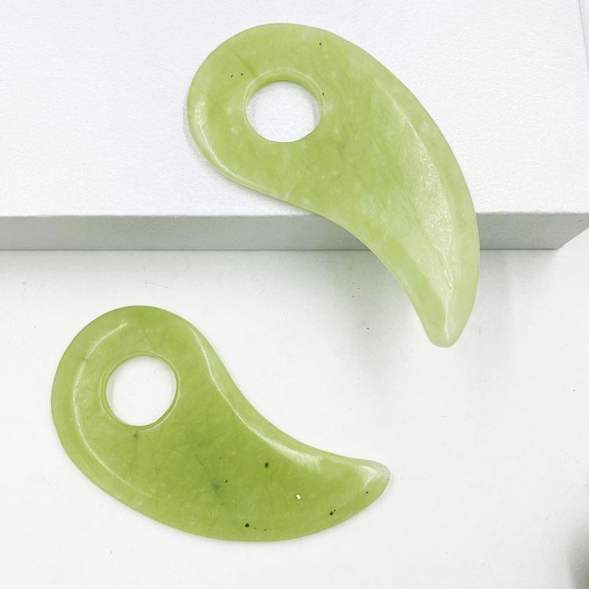

Transform your daily skincare routine into a luxurious self-care ritual with our top-rated jade gua sha stone. Hand-carved from 100% authentic natural jade, this timeless beauty tool provides a gentle, soothing massage that helps you relax and feel refreshed.
Gentle massage boosts blood flow for healthier skin
Cool jade helps de-puff and refresh your face
Soothes tension and promotes relaxation
Authentic hand-carved jade stone
We spent over 20 hours researching and testing 27 different jade gua sha stones available on Amazon to find the best option for most people. We evaluated each product based on strict, objective criteria to ensure we only recommend products that deliver real value.
After extensive testing and comparison, this premium jade gua sha stone came out on top in every category. It offers the perfect balance of quality, craftsmanship, and affordability, making it our clear top recommendation.
Most of the gua sha stones we tested had significant issues that made them hard to recommend. Here are the most common problems we found during our research:
This gua sha stone is one of the few products we found that doesn't have any of these issues. It's made from real natural jade, has a perfectly smooth finish, and is priced fairly.
With so many gua sha stones available on Amazon, it can be hard to know which one to choose. Our premium jade gua sha stands out from the competition because we never compromise on quality.
Unlike cheaper alternatives that use plastic or resin imitations, our gua sha stone is made from real natural jade. Each stone is unique with natural variations in color and pattern, making your gua sha tool one-of-a-kind.
Using your gua sha stone is simple and takes just 5-10 minutes a day. Follow these easy steps for the best experience:
Pro Tip: For an extra refreshing experience, place your jade stone in the refrigerator for 10-15 minutes before use.
Check current price and verified customer reviews on Amazon →
Jade has been cherished for thousands of years in many cultures for its beauty and calming properties. It is believed to bring harmony, balance and a sense of peace to those who use it.
Each of our jade stones is completely natural, meaning no two are exactly alike. You may notice subtle variations in color, ranging from pale green to deeper emerald tones, as well as natural inclusions and patterns. These unique characteristics are not flaws - they are proof that you are receiving a genuine, one-of-a-kind piece of nature.
Our jade is ethically sourced and carefully processed to ensure the highest quality. We never use chemically treated or dyed stones, so you can feel confident that you are using a pure, natural product on your skin.
A: Yes! This jade gua sha stone is eligible for Amazon Prime shipping, meaning you can get fast, free delivery on your order.
A: You can use your jade gua sha stone daily as part of your morning or evening skincare routine. Many people find that using it once a day provides the best experience.
A: Absolutely! Our jade gua sha stone is gentle enough for all skin types, including sensitive skin. Just be sure to apply plenty of facial oil or moisturizer to help the stone glide smoothly.
A: After each use, simply wipe your stone with a soft, damp cloth. For a deeper clean, you can wash it with mild soap and warm water, then pat dry with a towel.
A: Yes! When you purchase through Amazon, you are covered by Amazon's 30-day return policy. If you are not completely satisfied with your gua sha stone, you can return it for a full refund.
A: Yes! Our jade gua sha stone makes a thoughtful and unique gift for anyone who loves self-care, skincare or wellness. It comes beautifully packaged with a velvet storage pouch, ready for gifting.
A: Jade is known for its cooling properties and is great for reducing puffiness, while rose quartz is often associated with self-love and has a slightly warmer feel. Both work equally well for facial massage.
A: Yes! Just be sure to clean your stone thoroughly after each use and avoid active breakouts. Gua sha can actually help reduce inflammation when used gently.
A: With proper care, a natural jade gua sha stone can last a lifetime. It's a durable material that won't wear out over time.
Skip the hassle of comparing dozens of products on Amazon. We've done all the research for you and found the best jade gua sha stone available.
🛒 Buy Now On Amazon - Free Prime Shipping